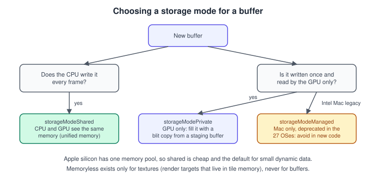
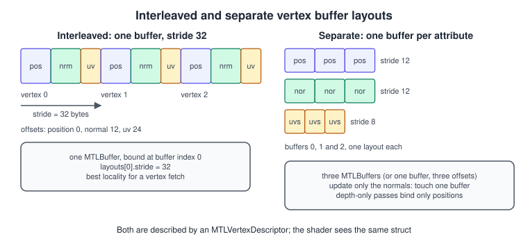
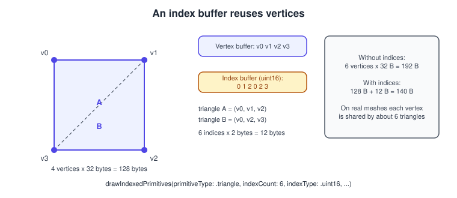

Buffers and Vertex Descriptors
|
This content was generated with the assistance of AI and should be verified against the official documentation before being relied on in production. |
Every triangle Metal draws starts as bytes in memory. A buffer is a block of memory the GPU can read (and, for compute, write) with no type information attached; a vertex descriptor is the small piece of metadata that tells the vertex stage how to cut those bytes into positions, normals and texture coordinates. This page covers both, plus index buffers, storage modes and the way dynamic data is updated while the GPU is still working on earlier frames.
The facts were checked in November 2026. The page documents Metal 4 (the MTL4* types of the 26 operating systems) next to the
Metal 3 API it can be mixed with, and Metal Shading Language 4.1 from the 27 operating systems. Everything here runs on iOS, iPadOS,
macOS, tvOS and visionOS; Metal 4 needs an A14 or later, an Apple silicon Mac or Apple Vision Pro, and the Swift code is written for
Xcode 27. The Metal 3 code paths shown in this page work on older hardware as well.
In the Metal Bookshelf running example (a multiplatform SwiftUI app hosting an MTKView, with a Metal 4 path, a Metal 3 fallback and a
visionOS target) this page sits between the triangle of
Hello Triangle with Metal 4 and the textured book: the book quad gets real
vertex buffers, an index buffer and a vertex descriptor here. The general concepts are in
Meshes and Vertex Data; the OpenGL counterpart is
Buffers and Vertex Specification.
What an MTLBuffer is
An MTLBuffer is created by an MTLDevice and has a fixed length in bytes. It has no type, no element count and no layout; the
shader decides what the bytes mean. Creation has three forms:
| Call | Use |
|---|---|
|
An uninitialised buffer of |
|
Allocates and copies |
|
Wraps memory you allocated yourself (page-aligned, a multiple of the page size) without copying. The deallocator tells you when Metal is done. |
All three return an optional: creation can fail when the length is too large for the device, so handle nil. A buffer’s
contents() pointer gives CPU access for shared buffers; a private buffer has no CPU pointer at all. A buffer also exposes
gpuAddress (a 64-bit MTLGPUAddress), which Metal 4 uses to bind it, and a label that shows up in the frame debugger. Always
set a label: it costs nothing and saves hours.
Storage modes

The storage mode (in MTLResourceOptions, as .storageModeShared and so on, or in MTLStorageMode) says which processors can see
the memory and what has to be synchronised.
| Mode | Who sees it | Notes |
|---|---|---|
|
CPU and GPU, same memory |
Default for buffers on all Apple silicon devices. No copy and no synchronisation call; you only have to make sure the GPU is not reading the bytes you overwrite (see the dynamic data section). |
|
GPU only |
Lets the driver choose the best layout and compression. Fill it with a blit copy from a shared staging buffer. The right choice for static meshes that live for many frames. |
|
CPU and GPU, two copies on discrete GPUs |
macOS only. You call |
|
Tile memory only |
Textures only, never buffers. A render target that is produced and consumed inside one render pass can live in tile memory and never reach system memory. See Render Passes and Load/Store Actions. |
Other options in MTLResourceOptions matter too. .cpuCacheModeWriteCombined is for buffers the CPU only writes: reads from the
CPU become very slow, but sequential writes are faster. .hazardTrackingModeUntracked tells Metal not to track read/write hazards
for this buffer, which is cheaper and is what you use when you synchronise with fences, events or Metal 4 barriers yourself (see
Synchronization and Barriers). Heap-allocated resources are untracked by
default.
Common mistakes:
-
Calling
contents()on a private buffer. It returns nothing useful; copy through a staging buffer. -
Using
.managedbecause an older tutorial did. On Apple silicon it behaves like shared, on Intel Macs it adds synchronisation work, and from the 27 operating systems it is deprecated. -
Creating a buffer per draw. Allocation is expensive; allocate once and reuse, or use a ring of buffers.
Uploading to a private buffer
import Metal
enum BufferError: Error { case allocationFailed, noCommandBuffer }
/// Copies `data` into a new private buffer using a temporary shared staging buffer.
func makePrivateBuffer<T>(device: MTLDevice,
queue: MTLCommandQueue,
data: [T],
label: String) throws -> MTLBuffer {
let length = MemoryLayout<T>.stride * data.count
guard let staging = device.makeBuffer(bytes: data, length: length, options: .storageModeShared),
let gpuBuffer = device.makeBuffer(length: length, options: .storageModePrivate),
let commandBuffer = queue.makeCommandBuffer(),
let blit = commandBuffer.makeBlitCommandEncoder() else {
throw BufferError.allocationFailed
}
gpuBuffer.label = label
blit.copy(from: staging, sourceOffset: 0, to: gpuBuffer, destinationOffset: 0, size: length)
blit.endEncoding()
commandBuffer.commit()
commandBuffer.waitUntilCompleted() // acceptable at load time, never inside the frame loop
return gpuBuffer
}Source: Setting resource storage modes
The blocking waitUntilCompleted() is fine while loading; in a game, batch many uploads into one command buffer and wait once, or
use the asynchronous loading described in Resource Loading and Streaming.
In Metal 4 the copy commands live on the compute encoder (MTL4ComputeCommandEncoder, with copy(sourceBuffer:sourceOffset:destinationBuffer:destinationOffset:size:)),
so the same upload is recorded with a compute encoder on an MTL4CommandBuffer; the staging idea does not change.
On Apple silicon with unified memory, a shared buffer is read directly by the GPU, so for small meshes the private copy buys little. It pays off for large static data, where the private layout can be faster and compressed, and it keeps the CPU from touching memory the GPU depends on.
Vertex data layouts

A vertex has several attributes. You can store them in two ways, and the descriptor supports both:
-
Interleaved: one buffer where each vertex is one record,
position normal uv position normal uv .... A vertex fetch reads one contiguous record, which is cache friendly. This is the default choice for meshes drawn with all their attributes. -
Separate (also called planar or structure-of-arrays): one buffer per attribute. It helps when attributes change at different rates (animate only the normals), or when some passes need only some attributes. A shadow pass that reads only positions touches a third of the memory.
A Swift struct for the interleaved case has to match the layout the descriptor declares. Use simd types, but beware of padding:
SIMD3<Float> is 16 bytes in memory (12 bytes of data plus 4 bytes of padding), so a struct of three of them has a stride larger
than the 12-byte attributes you may expect. For tightly packed data use MTLPackedFloat3-like packed types in C headers shared
with MSL, or arrays of plain Float, or declare the offsets explicitly from MemoryLayout.
import simd
/// Tightly packed 32-byte vertex: position at offset 0, normal at 12, uv at 24.
struct PackedVertex {
var px: Float, py: Float, pz: Float // offset 0, 12 bytes
var nx: Float, ny: Float, nz: Float // offset 12, 12 bytes
var u: Float, v: Float // offset 24, 8 bytes
}
// MemoryLayout<PackedVertex>.stride == 32Source: MTLVertexDescriptor
The struct above is the layout drawn in the figure: stride 32, offsets 0, 12 and 24. If you prefer SIMD3<Float> members, put
them first and read offsets from MemoryLayout<T>.offset(of:) instead of hard-coding numbers.
MTLVertexDescriptor

An MTLVertexDescriptor has two arrays:
-
attributes[i]: for shader attribute numberi, theformat(anMTLVertexFormat), theoffsetinside the record and thebufferIndexit comes from. -
layouts[j]: for buffer indexj, thestridebetween consecutive records, thestepFunctionand thestepRate.
| Property | Meaning |
|---|---|
|
|
|
Bytes from the start of the record. |
|
The slot you bind the buffer at on the encoder. Vertex buffers share the buffer binding table with uniforms and other buffers, so many programs reserve the high indices for vertex buffers or the low ones for uniforms and keep the convention in a shared header. |
|
Bytes from one record to the next. Must match the data you uploaded. Zero is invalid for |
|
|
|
How many vertices or instances share one record before advancing. |
import Metal
func makeBookVertexDescriptor() -> MTLVertexDescriptor {
let d = MTLVertexDescriptor()
// attribute 0: position, float3 at offset 0 of buffer 0
d.attributes[0].format = .float3
d.attributes[0].offset = 0
d.attributes[0].bufferIndex = 0
// attribute 1: normal, float3 at offset 12
d.attributes[1].format = .float3
d.attributes[1].offset = 12
d.attributes[1].bufferIndex = 0
// attribute 2: uv, float2 at offset 24
d.attributes[2].format = .float2
d.attributes[2].offset = 24
d.attributes[2].bufferIndex = 0
// buffer 0: interleaved records of 32 bytes
d.layouts[0].stride = 32
d.layouts[0].stepFunction = .perVertex
d.layouts[0].stepRate = 1
return d
}Source: MTLVertexDescriptor
The descriptor is assigned to the pipeline: renderPipelineDescriptor.vertexDescriptor = descriptor for an
MTLRenderPipelineDescriptor, and the same property on MTL4RenderPipelineDescriptor in Metal 4. Because it is part of the
pipeline state, changing a layout means a different pipeline state object, which is why meshes that share a layout share a pipeline
(see The Metal Render Pipeline). The vertex function receives the data through
[[stage_in]] and [[attribute(n)]]:
#include <metal_stdlib>
using namespace metal;
struct VertexIn {
float3 position [[attribute(0)]];
float3 normal [[attribute(1)]];
float2 uv [[attribute(2)]];
};
struct VertexOut {
float4 position [[position]];
float3 normal;
float2 uv;
};
struct Uniforms { float4x4 mvp; float3x3 normalMatrix; };
vertex VertexOut book_vertex(VertexIn in [[stage_in]],
constant Uniforms &u [[buffer(1)]]) {
VertexOut out;
out.position = u.mvp * float4(in.position, 1.0);
out.normal = u.normalMatrix * in.normal;
out.uv = in.uv;
return out;
}Source: MTLVertexDescriptor
The attribute numbers 0..2 are the contract between the descriptor and the shader. If they do not match, validation (when the
Metal API validation layer is on) reports a mismatch, otherwise you get garbage vertices.
Vertex pulling: skipping the descriptor
The descriptor is optional. A vertex function may take a pointer to the raw data and index it with [[vertex_id]], which is called
vertex pulling:
struct Vertex { packed_float3 position; packed_float3 normal; packed_float2 uv; };
vertex VertexOut book_vertex_pulled(uint vid [[vertex_id]],
const device Vertex *vertices [[buffer(0)]],
constant Uniforms &u [[buffer(1)]]) {
Vertex v = vertices[vid];
VertexOut out;
out.position = u.mvp * float4(v.position, 1.0);
out.normal = u.normalMatrix * float3(v.normal);
out.uv = v.uv;
return out;
}Source: MTLBuffer
packed_float3 has size 12 and alignment 4, unlike float3 (16 and 16), which is the usual reason hand-written pulling shows
skewed meshes. Pulling gives complete freedom (compressed formats, custom unpacking, bindless access with argument buffers, see
Argument Buffers and Bindless Resources) and is how GPU-driven pipelines
read geometry. The cost is that you lose the hardware vertex-fetch conversions (normalised and half formats) and have to unpack
yourself. A vertex descriptor remains the simplest, most portable choice for ordinary meshes.
Binding buffers and drawing
Metal 3 style
func drawBook(encoder: MTLRenderCommandEncoder,
vertexBuffer: MTLBuffer,
indexBuffer: MTLBuffer,
indexCount: Int,
uniforms: inout Uniforms) {
encoder.setVertexBuffer(vertexBuffer, offset: 0, index: 0)
// Up to 4 KB of constant data can be copied inline, no MTLBuffer needed.
encoder.setVertexBytes(&uniforms, length: MemoryLayout<Uniforms>.stride, index: 1)
encoder.drawIndexedPrimitives(type: .triangle,
indexCount: indexCount,
indexType: .uint16,
indexBuffer: indexBuffer,
indexBufferOffset: 0)
}Source: MTLRenderCommandEncoder
setVertexBytes copies the data into the command buffer, so it is perfect for a matrix or a handful of constants. For anything
larger than 4 KB, or data that is reused, use an MTLBuffer. setVertexBuffer(_:offset:index:) takes an offset, so one big buffer
can hold many meshes and you select each with its offset (or with baseVertex in an indexed draw).
Metal 4 style
Metal 4 has no per-encoder setVertexBuffer. Resources are bound by writing GPU addresses into an MTL4ArgumentTable, which you
create once and update between draws:
import Metal
func makeArgumentTable(device: MTLDevice) throws -> MTL4ArgumentTable {
let d = MTL4ArgumentTableDescriptor()
d.maxBufferBindCount = 4
return try device.makeArgumentTable(descriptor: d)
}
func drawBookMetal4(encoder: MTL4RenderCommandEncoder,
table: MTL4ArgumentTable,
vertexBuffer: MTLBuffer,
uniformBuffer: MTLBuffer,
indexBuffer: MTLBuffer,
indexCount: Int) {
table.setAddress(vertexBuffer.gpuAddress, index: 0)
table.setAddress(uniformBuffer.gpuAddress, index: 1)
encoder.setArgumentTable(table, stages: .vertex)
encoder.drawIndexedPrimitives(primitiveType: .triangle,
indexCount: indexCount,
indexType: .uint16,
indexBuffer: indexBuffer.gpuAddress,
indexBufferLength: indexBuffer.length)
}Source: MTL4ArgumentTable
Two Metal 4 details matter. First, setAddress(_:attributeStride:index:) binds a vertex buffer with a dynamic stride instead of the
one in the layout. Second, because you pass bare addresses, Metal can no longer know which buffers the draw touches: every buffer
must be resident, by adding it to an MTLResidencySet attached to the queue or the command buffer. Forgetting that is the Metal 4
equivalent of a missing useResource, and it produces GPU faults rather than a compile error. Residency sets are explained in
Synchronization and Barriers.
Index buffers
An index buffer stores indices (.uint16 up to 65,535 vertices, .uint32 beyond) that select vertices, so shared vertices are
stored once. For the book quad the figure above shows 4 vertices and 6 indices. The drawIndexedPrimitives parameters are:
| Parameter | Meaning |
|---|---|
|
|
|
How many indices to read. |
|
|
|
The buffer and a byte offset, which must be a multiple of the index size. |
|
Instancing and a value added to every index, so many meshes can share one vertex buffer. |
Winding order and culling also belong here: the default front face in Metal is clockwise, the opposite of OpenGL, and is set with
setFrontFacing(_:); setCullMode(_:) chooses what is discarded. Models exported with counter-clockwise winding (most of them)
need .counterClockwise.
Dynamic data and frames in flight
Per-frame data (matrices, a rotating book’s transform) is rewritten every frame while the GPU may still read the previous one or two. If you overwrite one shared buffer, a frame still in flight reads the new values. The classic solution is a ring of buffers, one per frame in flight, guarded by a semaphore:
import Metal
final class FrameUniforms {
static let framesInFlight = 3
private let buffers: [MTLBuffer]
private let semaphore = DispatchSemaphore(value: FrameUniforms.framesInFlight)
private var index = 0
init(device: MTLDevice, size: Int) {
buffers = (0..<Self.framesInFlight).map {
let b = device.makeBuffer(length: size, options: .storageModeShared)!
b.label = "Uniforms \($0)"
return b
}
}
/// Blocks until the GPU has finished the frame that used this slot.
func next() -> MTLBuffer {
semaphore.wait()
index = (index + 1) % Self.framesInFlight
return buffers[index]
}
/// Call from the command buffer completion handler (Metal 3) or after the frame's work is done.
func release() { semaphore.signal() }
}Source: Synchronizing CPU and GPU work
release() is called from the command buffer’s completed handler (addCompletedHandler) in Metal 3. In Metal 4 the same role is
played by the per-frame command allocator and a shared event, which the page
MetalKit, MTKView and SwiftUI sets up. The rule is the same: one slot of
CPU-writable memory per frame in flight.
Performance notes
-
Prefer interleaved buffers for ordinary draws and separate position buffers for depth-only passes.
-
Use the smallest formats that look right: half floats for uvs, packed normals (
.int1010102Normalized) and normalised bytes for colours reduce bandwidth, which is the usual limit on mobile GPUs. -
Keep strides a multiple of 16 bytes if the data feeds compute or vertex pulling; alignment mistakes cost time and correctness.
-
Put static meshes in private buffers (or in a heap) and keep their count low: many small buffers cost more than a few large ones with offsets.
-
Tools: the Metal debugger’s resource view shows each buffer’s storage mode, size and which draws use it.
What changed and where the books are outdated
| Topic | Older teaching | Now |
|---|---|---|
Storage mode |
Metal by Tutorials 4th ed. (MBT) and Metal Programming Guide (CLA) mention managed storage for Mac buffers and a |
|
Buffer binding |
Both books bind with |
Still valid in Metal 3 (and Metal 4 can run alongside it), but Metal 4 binds GPU addresses through |
Library creation |
CLA uses |
|
Compressed vertex formats |
Rarely covered. |
Packed normal and half formats are the standard way to cut bandwidth. |
Command buffer per frame |
MBT ch. 1 to 3 create a new command buffer each frame. |
Metal 4 reuses command buffers and allocators; the old model still works. |
See also
-
Transforms and Camera: the uniforms bound next to the vertex buffer.
-
Textures and Samplers: the
uvattribute becomes a texture lookup. -
Models with Model I/O and USD: loading vertex buffers and descriptors from a file.
-
GPU Architecture and TBDR: why unified memory changes storage choices.
References
-
MTLBuffer: https://developer.apple.com/documentation/metal/mtlbuffer
-
MTLVertexDescriptor: https://developer.apple.com/documentation/metal/mtlvertexdescriptor
-
Setting resource storage modes: https://developer.apple.com/documentation/metal/setting-resource-storage-modes
-
MTL4ArgumentTable: https://developer.apple.com/documentation/metal/mtl4argumenttable
-
MTL4RenderCommandEncoder: https://developer.apple.com/documentation/metal/mtl4rendercommandencoder
-
Understanding the Metal 4 core API: https://developer.apple.com/documentation/metal/understanding-the-metal-4-core-api
-
Metal Shading Language specification: https://developer.apple.com/metal/Metal-Shading-Language-Specification.pdf
-
Metal Feature Set Tables: https://developer.apple.com/metal/Metal-Feature-Set-Tables.pdf
-
Metal by Tutorials (publisher page): https://www.kodeco.com/books/metal-by-tutorials
-
Metal Programming Guide (publisher page): https://www.informit.com/store/metal-programming-guide-tutorial-and-reference-via-9780134668949